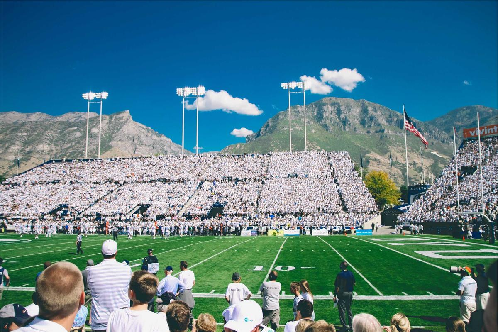

Sport · Football
Stoppage-time stunner: Harbour City snatch the title on the final day
Forty thousand fans, one looping header and a 31-year wait over in the 94th minute. Our match report, ratings and the best of the celebrations.
By Tom Achebe · 6 min read